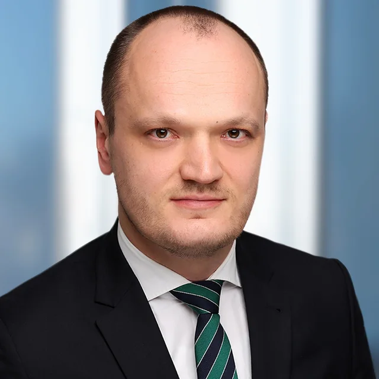
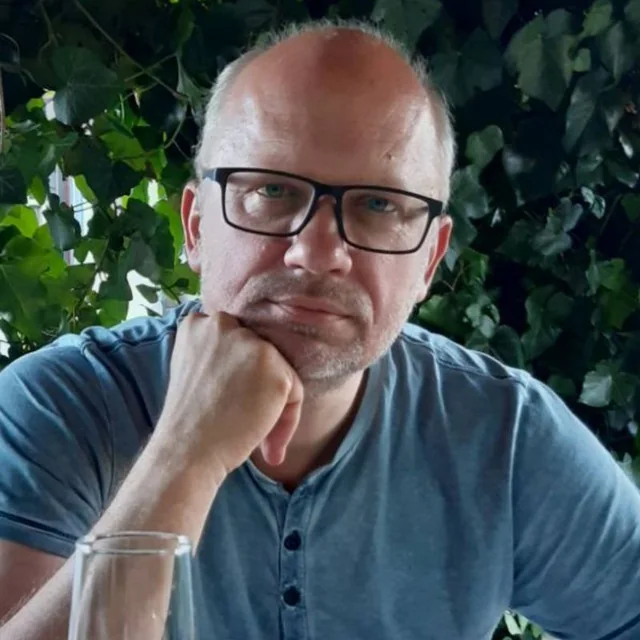
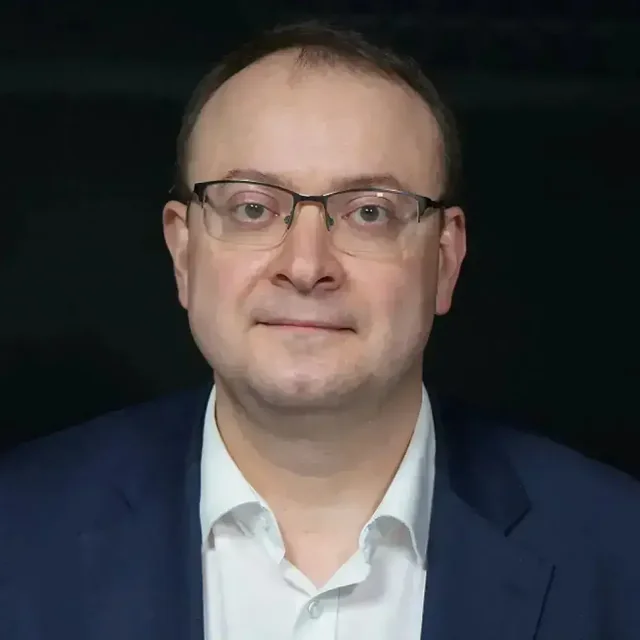

01 – ПОРУЧЕНИЕ
Правовые заключения и исследования
Анализ правовых вопросов, экспертные документы, проверка ранее подготовленных заключений.
Объединяем профессиональные компетенции и организационные ресурсы для международных юридических задач – от одного заключения до многолетнего сопровождения дела.
Ассоциация объединяет специалистов с самостоятельной профессиональной практикой. При обращении через Ассоциацию клиент получает единый договор, координацию исполнения и проверки в соответствии с применимыми стандартами.
Анализ правовых вопросов, экспертные документы, проверка ранее подготовленных заключений.
Координация специалистов, документов, переводов и процессуальных этапов.
Подготовка к выступлениям, дистанционное и очное участие по согласованию.
Профессиональная самостоятельность каждого участника сочетается с общей организацией поручений. Клиент может обратиться через Ассоциацию или непосредственно к выбранному эксперту.

Российское право · санкции · арбитраж

Медиация · конституционное право

Уголовная юстиция · INTERPOL · экстрадиция
Ассоциация разрабатывает собственные профессиональные стандарты на основе отраслевых практик. Они охватывают управление поручением, компетенции, документооборот, контроль и управление знаниями.
Цели, вопросы, материалы, исполнитель, условия договора и этапы работы.
Эксперт анализирует источники и утверждает собственные профессиональные выводы.
Контроль полноты, оформления, соответствия заданию и соблюдения процедур.
Координация документов, коммуникации и следующих этапов дела.
Исследования, методические материалы и аналитика участников формируют общую базу знаний Ассоциации.
От исходной ситуации – к проверяемому предмету исследования.
Две характеристики, влияющие на состав поручения.
Направление разработки стандартов Ассоциации.
Первичное обращение поможет определить необходимые компетенции, формат работы, этапы и условия сопровождения.
Обсудить поручение ↗Объединение независимых юристов и экспертов, разработка стандартов и совместная работа над международными задачами.
Обсудить участие ↗